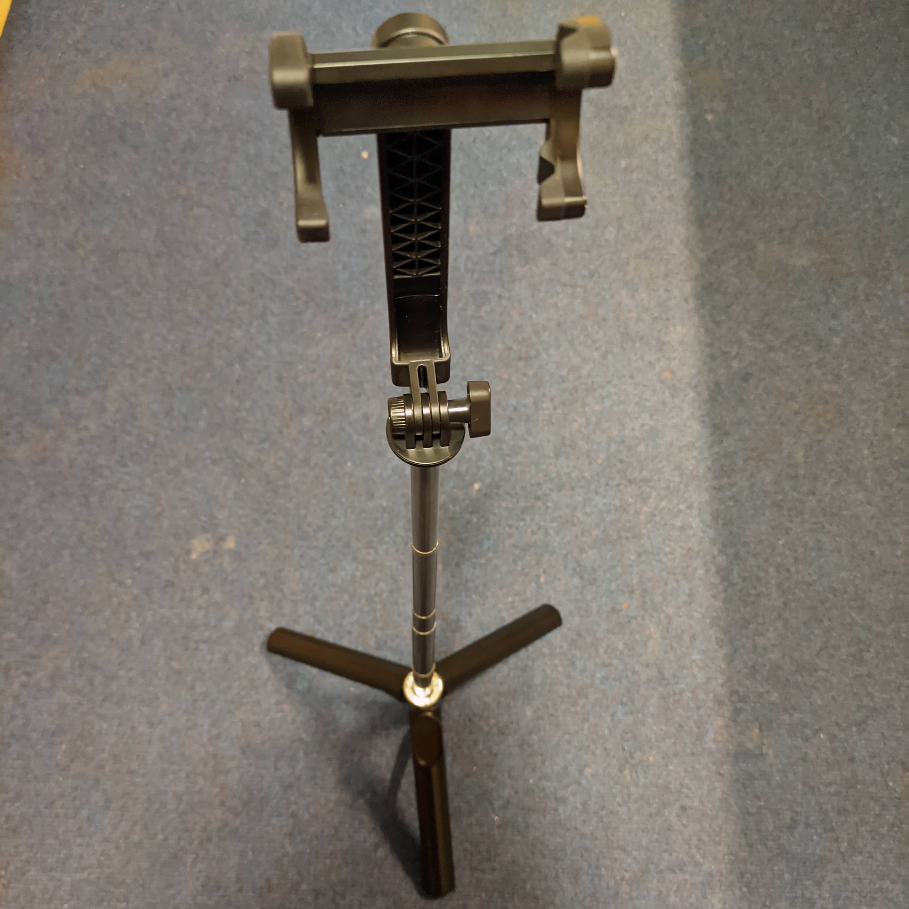
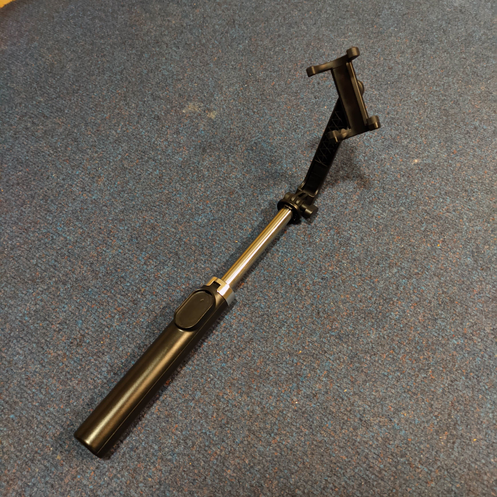

Here's my recent and a very valuable purchase that I absolutely adore to have. This particular tripod is a
multi-utility product which I end up using every day.
The design is quite intriguing. It starts out folded, being the size of an umbrella handle which makes it
portable. Once the phone holder part is folded out, the product can be used as a pretty stable selfie-stick.
It also comes with a bluetooth remote to be able to click selfies, which is an added bonus.

Tripod in extended configuration
Very Convenient
With a small press of a finger at the bottom, the legs of the tripod can be brought out to convert the
product into a stand. Its very convenient when it comes to making video calls back home (especially when my
Mum's guiding me through a recipe). Then you can adjust the height of the tripod by pulling the stand up and
it stretches out above waist height quite easily, which is quite helpful when it comes to clicking pictures
of the sky at night, and other landscapes.

Tripod in selfie-stick configuration
Accessible
Easy to hold, and an easier to understand operation even without reading the manual, and not to mention that
it can be used by left-handed and right-handed users likewise. This makes it a good product of
design in my books.